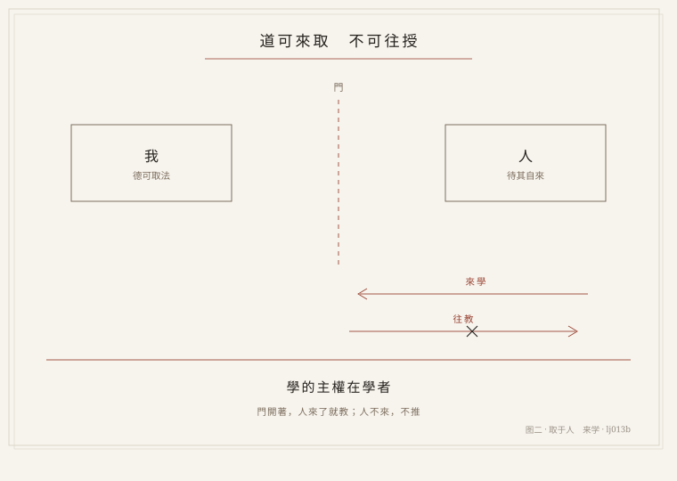

曲礼上 · 一·十四 · 第 13 课
上一课讲质，这一课讲质怎么传：只能等人来取，不能去抓。
说什么事：礼只听说从人身上取法，没听说把人取来授位；只听说人来学，没听说往教。
落在哪一层：教。这是《曲礼》第一次直说「教」的姿势。
为何编在此位：质立住了才谈传授。有质而往教，是挟质以骄人；无质而往教，是以空器诱人。
【经】禮聞取於人，不聞取人；禮聞來學，不聞往教。
取于人 朱子：「为人所取法也。」取之者在人，被取者在我。
取人 郑注（疏引）：「谓君人者。」疏：「不闻直取贤人，授之以位，制服而已。」——取人是把人拿来用。
来学 人来，我不去。
往教 我去，人不来。
两句是一事 朱子：「来学往教即其事也。」前句说取的方向，后句说学的方向。
礼只听说让人从我这里取法，没听说把人取来授职；只听说人来学，没听说我去教。
道不可往授，只可来取。师的位置在「待」，不在「招」。
第一层 方向之别 同一「取」字，方向一反，礼就两样：取于人，是把我的德行摆在人可取之处；取人，是把人摆在我可用之处。前者以人为目，后者以人为器。疏把「取人」解作「授之以位，制服而已」——给了位、穿了服，人就成了制度里的一件。
第二层 来学与往教 朱子断得干脆：「取于人者，为人所取法也；取人者，人不来而我引取之也。来学往教即其事也。」往教的难处不在辛苦，在错位：教者先动了，学者还没动。而学的一半正在学者那一动；教者代他动了，学就只剩听。
第三层 与《孟子》对读 朱子又云：「此与孟子治人治于人、食人食于人意相类。」治人者役人，治于人者役于人；食人者受人养，食于人者自养。同一句法，主动与被动一换，义全反。此句的筋骨就在这一副对仗里。
第四层 「待」的礼 「不闻往教」不是不教，是教有其次。礼给教者一箇姿态：把东西备好，把门开着，等人来。这姿态今日看像消极，其实是把「学」的主权还给学者——不还，学不成。
与今日何干 今日教与学都急：课要推、内容要投、观点要塞。此句给一箇反问：这是他要的，还是我要给的？他要，才叫学；我要给，多半只是我说。
| 左 | 右 |
|---|---|
| 取于人：我的德行摆在可取处 | 取人：人摆在我可用处 |
| 来学：人来，我不去 | 往教：我去，人未来 |
| 取人是授位制服而已 | 学的一半在学者那一动 |
| 待是备好而待 | 门开着，人来了就教 |
画一扇半开的门，门内案上置一函书、一盂水，盂中水满不溢；门外石阶上无履，只有一串未干的脚印向门而来，停在阶前。不画人。赭色只在门环与脚印。
